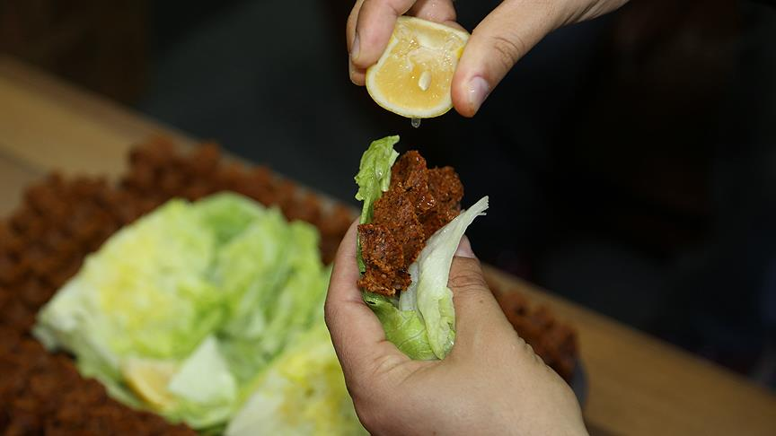

Cigkofte sitesi
Cigkofte yeme teknikleri

Lavasla
-Lavasin icerisine cigkofteyi koyuyoruz
-Limon ve nar eksisi sikiyoruz
-Uzerine marul ekliyoruz
-Istege gore aci,cips ekliyoruz(aci got yakar dikkat)
Marulla
-Marulu avucumuza aliyoruz
-Icine cigkofteyi ekliyoruz
-Uzerine limon istege gore nar eksisi ekliyoruz
-kutur kutur yiyoruz
Cigkofte yemenin arti ve eksileri
Artilari
-Lezizdir
-Ucuzdur
-Doyurucudur
Eksileri
-Got eritir
-Icinizi yakar
-Mideniz yarra yer